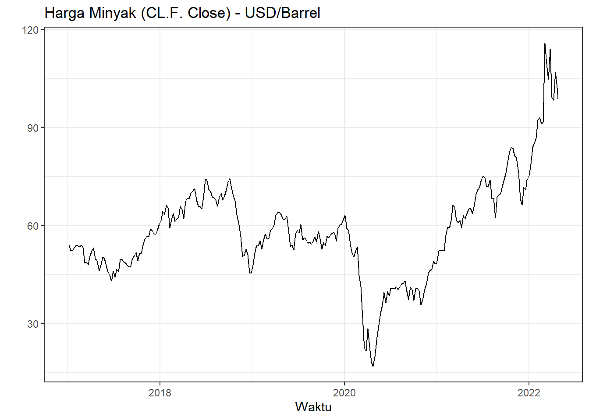
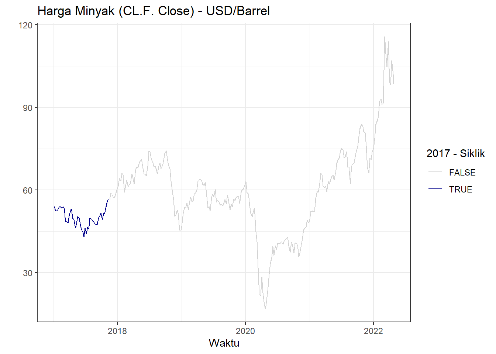
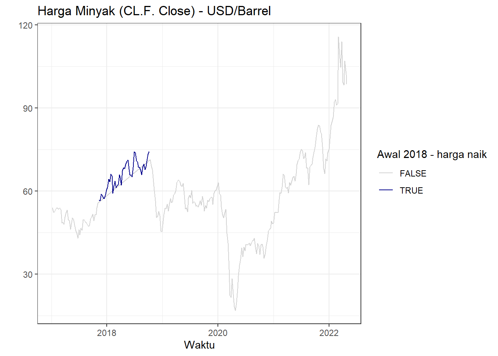
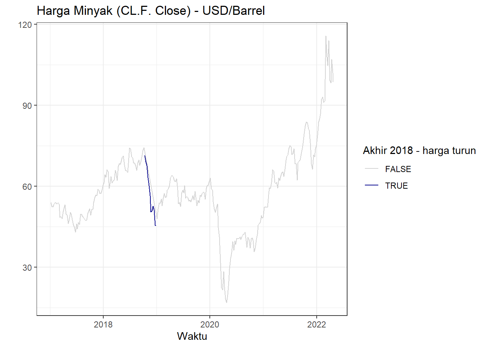
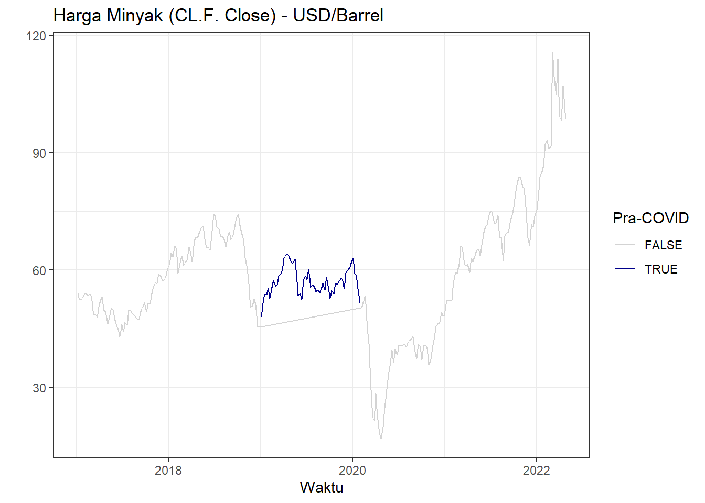
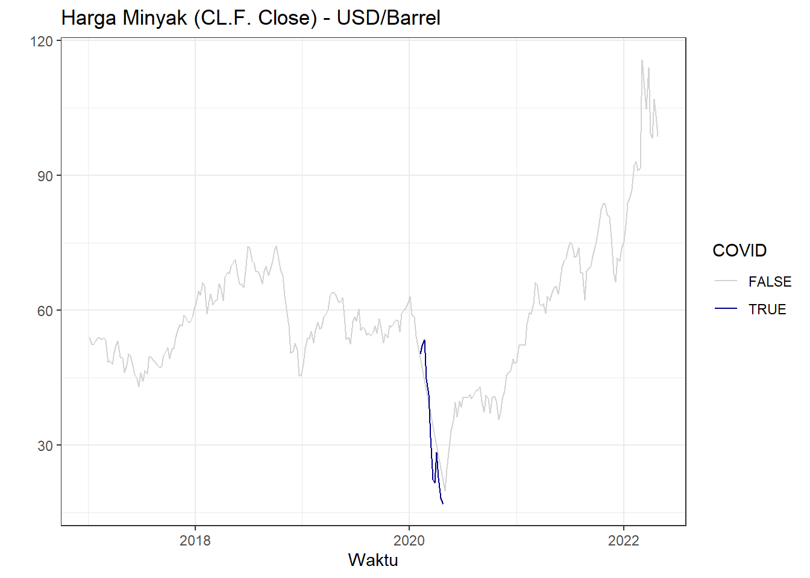
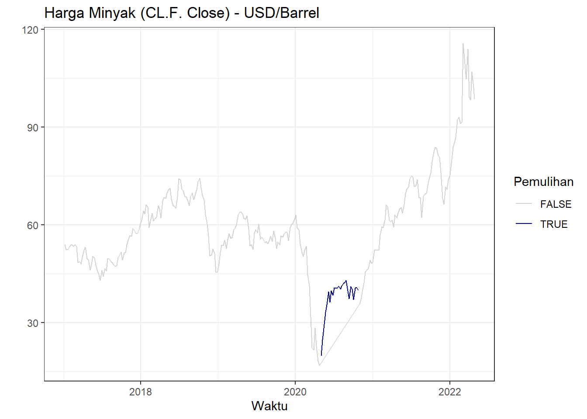
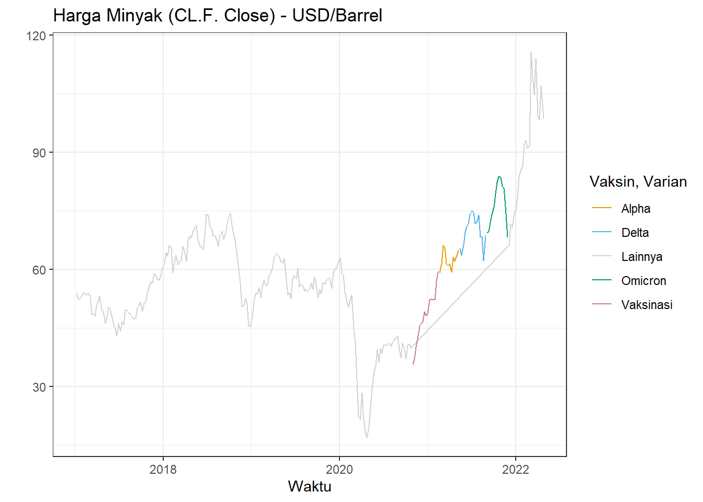
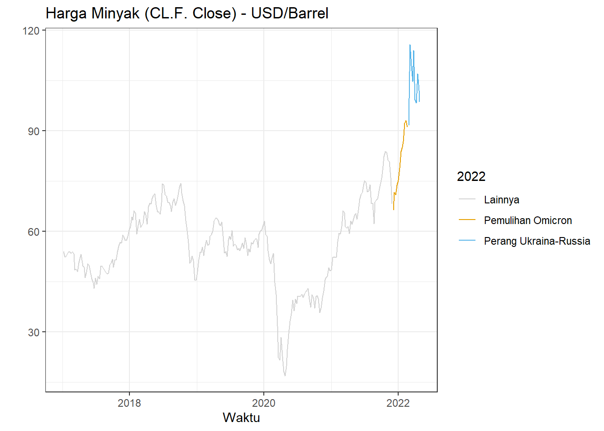

Bab 2 Praproses dan Eksplorasi Data (2017-2022)
Bagian ini akan membahas beberapa hal:
- Permasalahan interval waktu data
- Latar belakang fluktuasi harga minyak pada tahun 2017-2022
- Ekstraksi peubah dummy untuk memodelkan efek COVID-19
- Pola data time series dan kestasioneran
- Identifikasi model.
2.1 Interval waktu data
Dari melihat 10 tanggal pertama yang dicatat di dataset harga minyak:
knitr::kable(head(crudenow,n=10),
col.names = c("Tanggal","Harga Penutupan"))| Tanggal | Harga Penutupan |
|---|---|
| 2017-01-03 | 52.33 |
| 2017-01-04 | 53.26 |
| 2017-01-05 | 53.76 |
| 2017-01-06 | 53.99 |
| 2017-01-09 | 51.96 |
| 2017-01-10 | 50.82 |
| 2017-01-11 | 52.25 |
| 2017-01-12 | 53.01 |
| 2017-01-13 | 52.37 |
| 2017-01-17 | 52.48 |
Terlihat bahwa rentang waktu pengamatan data tidak sama. Misal, tidak ada pengamatan saat 1 Januari 2009 karena ada libur tahun baru. Selain itu, ada lompatan dari 2 Januari 2009 ke 5 Januari 2009. Dalam kata lain, harga minyak tidak diamati pada tanggal 3 dan 4 Januari 2009, yang merupakan akhir minggu (hari Sabtu dan Minggu). Pola yang sama terulang di data deret waktu tersebut bagi akhir minggu dan hari libur lainnya - pasar ditutup sehingga harga minyak tidak ada.
Situasi ini dapat ditangani dengan tiga cara umum:
- Abaikan rentang waktu harian yang tidak sama. Gunakan trading days atau hari kerja sebagai rentang waktu.
- Isi data akhir minggu dan hari libur menggunakan suatu bentuk interpolasi.
- Agregasikan data menjadi data mingguan, bulanan, atau tahunan.
Cara pertama sering dipakai dalam peramalan deret waktu. Walaupun tidak ada data hari libur dan akhir minggu, nilai harian reksadana saham CREF dari tahun 2004 sampai 2006 dimodelkan dengan menggangap data tersebut memiliki rentang waktu yang sama (Cryer dan Chan 2008). Pemodelan harga emas harian dari tahun 1985 sampai 1989 juga hanya menggunakan trading days. Dilakukan interpolasi, tetapi hanya untuk data hilang di trading days (Hyndman dan Athanasopoulos 2018). Peramalan harga minyak (Elshendy et al. 2018) juga menggunakan data selama 84 hari kerja saja.
Namun, juga ada justifikasi untuk interpolasi data. Interpolasi data dilakukan saat observasi tersebut dianggap memiliki nilai suatu peubah, tetapi tidak dapat diobservasi. Misal, tidak perlu melakukan interpolasi peubah gaji untuk seorang anak karena dia tidak mungkin bekerja. Dalam kasus ini, harga minyak di hari libur mungkin saja memiliki nilai. Pasar saham dan sekuritas sering mengalami after-hours trading; saat hal tersebut terjadi, harga berubah (Barclay dan Hendershott 2015). Walaupun begitu, bentuk proses tersebut harus diasumsikan untuk diinterpolasi. Misal, jika menggunakan interpolasi linear, diasumsikan bahwa pergerakan harga dari hari kerja ke hari kerja lainnya di hari libur konstan. Ini belum tentu benar - mungkin saja di hari Sabtu, harga masih naik dari hari Jumat, tetapi harga turun di hari Minggu. Interpolasi linear akan mengasumsikan harga turun di Sabtu dan Minggu. Oleh karena itu, interpolasi akan menghasilkan aproksimasi kasar dari proses after-hours trading.
Agregasi data dapat menyelesaikan masalah tersebut karena hasil agregasi dianggap memiliki rentang waktu sama. Misal, mingguan atau bulanan. Agregasi ini harus mengikuti beberapa aturan (Stefan 2019). Untuk harga opening, akan diambil data harga open dari hari pertama di minggu/bulan tersebut - harga tersebut merupakan harga minyak saat pasar dibuka. Harga close diambil dari harga close hari terakhir di minggu/bulan tersebut - harga tersebut merupakan harga minyak saat pasar ditutup. Harga maksimum dan minimum memiliki logika yang mirip.
Namun, agregasi data belum tentu menyelesaikan masalah rentang waktu tak sama. Ada beberapa bulan yang memiliki 28, 30, dan 31 hari. Ini berarti rentang pengamatan satu bulan dapat berarti beberapa jarak waktu yang berbeda. Data mingguan selalu memiliki rentang 7 hari jika data diambil dari hari yang sama di setiap minggu. Dalam kasus ini, ini berarti mengasumsikan data di hari Jumat selalu ada untuk closing, atau data hari Senin selalu ada. Mengingat rentang waktu yang cukup lama (8 tahun), kemungkinan besar ada data di hari-hari tersebut yang tidak ada.
Untuk melihat apakah kemungkinan tersebut terjadi, ambil data per minggu. Lalu, kurangkan hari terakhir di minggu tersebut dengan hari terakhir di minggu sebelumnya untuk mendapatkan jarak antarminggu. Akan digunakan fungsi ISOweek dari package dengan nama yang sama (Block dan Hatto von Hatzfeld 2011) agar pembagian minggu mengikuti standar ISO 8601. Tabel lalu dimanipulasi menggunakan data.table (Dowle dan Srinivasan 2021), khusunya fungsi shift yang dapat memunculkan lag 1 dari variabel tertentu.
library(ISOweek)
library(data.table)
weeklyCrude<-crudenow[,Week:=ISOweek(X)
][,.(Date=last(X),
Close=last(`CL=F.Close`)),by=list(Week)
][,Dist:=Date-shift(Date)]Tidak semua minggu memiliki jarak 7 hari. Ada beberapa minggu dengan jarak 6 dan 8 hari:
knitr::kable(weeklyCrude[,.(count=.N),by=Dist], col.names = c("Jarak",
"Jumlah"))| Jarak | Jumlah |
|---|---|
| NA days | 1 |
| 7 days | 258 |
| 6 days | 9 |
| 8 days | 9 |
| 3 days | 1 |
Dapat diekstraksi peubah dummy dari minggu-minggu dengan jarak lebih dari 7 hari untuk memodelkan efek minggu-minggu tersebut.
weeklyCrude[,Dist:=na.fill(Dist,type="const",fill=as.Date(7))
][,`:=`("6DW"=ifelse(Dist==6,1,0),
"8DW"=ifelse(Dist==8,1,0))]Peubah tersebut nantinya dapat digunakan dalam pemodelan. Namun, sepertinya baik dummy dengan untuk minggu periode 6 hari dan 8 hari tidak berkorelasi terlalu besar dengan harga minyak saat penutupan pasar:
knitr::kable(t(c(cor(weeklyCrude$`6DW`,weeklyCrude$Close,method="spearman"),
cor(weeklyCrude$`8DW`,weeklyCrude$Close,method="spearman"))),
col.names=c("6 Hari","8 hari"),
row.names=F)| 6 Hari | 8 hari |
|---|---|
| 0.0036721 | -0.0055715 |
2.2 Plot data
Untuk melihat jenis data yang dihadapi, dapat di-plot data deret waktu mingguan harga minyak dari tahun 2017-2022 dengan ggplot2 (Wickham et al. 2021):
ggplot(aes(x=Date, y=Close),data=weeklyCrude) +
geom_line()+ggtitle("Harga Minyak (CL.F. Close) - USD/Barrel")+
xlab("Waktu")+ylab(" ")+theme_bw()
Data jelas tidak stasioner.
2.3 Latar Belakang
cbbPalette <- c("#E69F00", "#56B4E9", "#D3D3D3", "#009E73", "#CC79A7")
highlightPalette<-c("#D3D3D3","#00008b")
weeklyCrude[,"2017 - Siklik":=ifelse(Date<=as.Date("2017-11-10"),T,F)]
ggplot(aes(x=Date, y=Close),
data=weeklyCrude)+
geom_line(aes(color=`2017 - Siklik`))+scale_color_manual(values=highlightPalette)+
ggtitle("Harga Minyak (CL.F. Close) - USD/Barrel")+xlab("Waktu")+ylab(" ")+
theme_bw()
Di awal tahun 2017, harga minyak menurun karena komitmen produsen minyak di OPEC untuk memotong produksi minyak diragukan. Selain itu, turunnya volume ekspor Tiongkok menandakan kemungkinan lemahnya permintaan untuk minyak mentah (Kumar 2017 Jan). Namun, harga minyak sedikit naik di akhir Januari 2017 karena melemahnya dolar Amerika Serikat - minyak dibeli menggunakan dolar Amerika Serikat, sehingga dolar yang lebih lemah berarti negara pengimpor minyak dapat membeli lebih banyak minyak mentah yang meningkatkan permintaan (Gloystein 2017 Jan).
Walaupun terdapat fenomena tersebut, pasokan minyak masih meningkat sehingga harga minyak turun sampai Maret. Arab Saudi berjanji untuk menurunkan produksi di bulan April, tetapi produksi minyak negara OPEC justru meningkat di bulan Juni sampai harga minyak mencapai titik terendahnya (Gloystein 2017 Jun). Janji OPEC untuk menurunkan produksi minyak dipenuhi di paruh kedua 2017 dan permintaan meningkat. Oleh karena itu, harga minyak meningkat sampai pulih ke level sebelum bulan Juni di bulan November (Gloystein 2017 Des).
Secara umum, periode ini ditandakan dengan siklus. Negara OPEC berjanji menurunkan produksi (yang meningkatkan harga), tetapi produksi sebenarnaya masih tinggi (yang menurunkan harga) sehingga harga turun lalu naik.
weeklyCrude[,"Awal 2018 - harga naik":=ifelse(Date>=as.Date("2017-11-10") & Date<=as.Date("2018-10-10"),T,F)]
ggplot(aes(x=Date, y=Close),
data=weeklyCrude)+
geom_line(aes(color=`Awal 2018 - harga naik`))+scale_color_manual(values=highlightPalette)+
ggtitle("Harga Minyak (CL.F. Close) - USD/Barrel")+xlab("Waktu")+ylab(" ")+
theme_bw()
Harga minyak naik di akhir tahun 2017 sampai triwulan ketiga 2018. Selain turunnya produksi minyak oleh OPEC, terjadi gangguan pipa minyak di Libya dan Rusia yang menganggu distribusi minyak. Di awal Januari 2018, rendahnya pasokan minyak dunia meningkatkan harga. Walaupun terjadi sedikit penurunan karena Amerika Serikat berencana meningkatkan produksi (Gloystein 2018 Jan), negara-negara OPEC masih memotong produksi karena ingin meningkatkan harga minyak. Pada Maret sampai Mei 2018, harga minyak naik karena ketidakstabilan di Suriah, kemungkinan pembatasan impor minyak dari Iran, dan rendahnya produksi minyak OPEC dan Venezuela.
weeklyCrude[,"Akhir 2018 - harga turun":=
ifelse(Date>=as.Date("2018-10-10") & Date<=as.Date("2018-12-31"),T,F)]
ggplot(aes(x=Date, y=Close),
data=weeklyCrude)+
geom_line(aes(color=`Akhir 2018 - harga turun`))+scale_color_manual(values=highlightPalette)+
ggtitle("Harga Minyak (CL.F. Close) - USD/Barrel")+xlab("Waktu")+ylab(" ")+
theme_bw()
Harga minyak turun drastis di akhir tahun 2018. Rusia dan Arab Saudi mengumumkan peningkatan produksi untuk menggantikan minyak Iran, pemerintah Amerika Serikat memberi dispensasi ke beberapa perusahaan Iran (Woolich et al. 2018), dan produksi shale oil as meningkat. Dari sisi penawaran, pasokan minyak meningkat yang menurunkan harga (DiChristopher 2018 Des).
weeklyCrude[, "Pra-COVID":=
ifelse(Date>=as.Date("2019-01-01") & Date<=as.Date("2020-02-03"),T,F)]
ggplot(aes(x=Date, y=Close),
data=weeklyCrude)+
geom_line(aes(color=`Pra-COVID`))+scale_color_manual(values=highlightPalette)+
ggtitle("Harga Minyak (CL.F. Close) - USD/Barrel")+xlab("Waktu")+ylab(" ")+
theme_bw()
Tahun 2019 diawali dengan peningkatan harga minyak karena penurunan produksi dari Arab Saudi dan sanksi kepada Venezuela. Terdapat penurunan harga di bulan Februari karena melambatnya pertumbuhan ekonomi di Amerika Serikat, yang menghasilkan sedikit fluktuasi naik-turun, tetapi harga minyak tetap naik karena dispensasi ke eksportir minyak Iran berakhir dan pembatasan perdagangan minyak diberlakukan (2019). Namun, setelah mencapai puncak di bulan April, harga minyak turun di bulan Mei saat Amerika Serikat mengumumkan perang dagang dengan Tiongkok (Kumar 2019 Agu). Harga kembali naik di bulan Juni setelah Iran menjatuhkan drone Amerika Serikat, yang meningkatkan ketidakstabilan di Timur Tengah. Pengumuman tarif baru dalam perang dagang oleh Amerika Serikat menurunkan kembali harga minyak, tetapi ekspektasi penurunan produksi oleh OPEC meningkatkan harga minyak di November 2019.
Secara umum, fluktuasi naik-turun terjadi karena tekanan perang dagang (yang menurunkan harga karena menurunkan permintaan minyak) dan tekanan dari OPEC serta ketidakstabilan Timur Tengah yag meningkatkan harga minyak.
weeklyCrude[,"COVID":=
ifelse(Date>=as.Date("2020-02-03") & Date<=as.Date("2020-04-30"),T,F)]
ggplot(aes(x=Date, y=Close),
data=weeklyCrude)+
geom_line(aes(color=`COVID`))+scale_color_manual(values=highlightPalette)+
ggtitle("Harga Minyak (CL.F. Close) - USD/Barrel")+xlab("Waktu")+ylab(" ")+
theme_bw()
Harga minyak dunia terjun bebas dari Februari sampai April 2020. Pandemi COVID-19 mengurangi aktivitas ekonomi sehingga permintaan minyak berkurang. Karena itu, negara-negara OPEC setuju untuk mengurangi produksi, kecuali Rusia. Terjadi perang harga minyak antara Arab Saudi dan Rusia. Arab Saudi meningkatkan produksi dan memberikan diskon harga minyak, sampai minyak turun drastis (Calhoun 2020). Akhirnya, tekanan dari Amerika Serikat ke Arab Saudi (dan penurunan devisa Arab Saudi dan Rusia saat harga minyak rendah) membuat kedua negara setuju untuk memotong produksi. Namun, harga masih turun di akhir April sampai menjadi negatif karena biaya menyimpan minyak lebih mahal dari harga jualnya (Mills 2020 Apr).
weeklyCrude[,"Pemulihan":=
ifelse(Date>=as.Date("2020-04-30") & Date<=as.Date("2020-10-24"),T,F)]
ggplot(aes(x=Date, y=Close),
data=weeklyCrude)+
geom_line(aes(color=`Pemulihan`))+scale_color_manual(values=highlightPalette)+
ggtitle("Harga Minyak (CL.F. Close) - USD/Barrel")+xlab("Waktu")+ylab(" ")+
theme_bw()
Setelah bulan April, penurunan produksi minyak OPEC dan Amerika Serikat mulai memiliki efek dan harga minyak kembali meningkat. Di bulan Juli harga minyak turun sedikit karena menguatnya dolar (sehingga pengimpor minyak susah membeli minyak), rendahnya permintaan, dan pasokan Amerika Serikat yang lebih tinggi dari harapan. Berita mengenai Presiden Amerika Serikat pada bulan Oktober, Donald Trump, yang terkena COVID juga menurunkan harga minyak. Namun, fluktuasi tersebut relatif kecil dibandingkan fluktuasi-fluktuasi yang terjadi saat awal COVID. Berita mengenai vaksin COVID di akhir 2020 (Pfizer 2020 Nov) meningkatkan kepercayaan bahwa ekonomi dunia akan kembali pulih, dan harga minyak mulai naik.
weeklyCrude[,"Vaksin, Varian":=
ifelse(Date>=as.Date("2020-10-24") & Date<=as.Date("2021-02-13"),
"Vaksinasi",
ifelse(Date>=as.Date("2021-02-02") & Date<=as.Date("2021-05-07"),
"Alpha",
ifelse(Date>=as.Date("2021-05-07") & Date<=as.Date("2021-09-01"),
"Delta",
ifelse(Date>=as.Date("2021-09-01") & Date<=as.Date("2021-12-01"),
"Omicron","Lainnya"))))]
ggplot(aes(x=Date, y=Close),
data=weeklyCrude)+
geom_line(aes(color=`Vaksin, Varian`))+scale_color_manual(values=cbbPalette)+
ggtitle("Harga Minyak (CL.F. Close) - USD/Barrel")+xlab("Waktu")+ylab(" ")+
theme_bw()
Tren umum harga minyak naik karena optimisme mengenai vaksin. OPEC juga masih membatasi produksi pada awal tahun 2021. Namun, tren tersebut tidak mulus karena muncul beberapa varian COVID-19. Varian Alpha disebut variant of concern pada Februari 2021. Harga minyak turun karena infeksi dari varian Alpha meningkat. Lalu, setelah varian tersebut teratasi, pemulihan ekonomi dunia meningkatkan harga minyak. Delta mulai disebut variant of conern pada Mei 2021, dan di beberapa negara peningkatan kasus dari Delta masih ada sampai bulan September. Harga minyak turun (2021 Agu). Namun, badai Ida di Amerika Serikat yang mengaggu produksi minyak, penurunan produksi OPEC, dan perbaikan hubungan Amerika Serikat-Tiongkok meningkatkan harga minyak. Saat varian Omicron muncul, harga minyak turun lagi (Resnick-ault 2021 Des).
cbbPalette2 <- c("#D3D3D3","#E69F00", "#56B4E9")
weeklyCrude[,"2022":=
ifelse(Date>=as.Date("2021-12-01") & Date<=as.Date("2022-02-24"),
"Pemulihan Omicron",
ifelse(Date>=as.Date("2022-02-24"),"Perang Ukraina-Russia","Lainnya"))]
ggplot(aes(x=Date, y=Close),
data=weeklyCrude)+
geom_line(aes(color=`2022`))+scale_color_manual(values=cbbPalette2)+
ggtitle("Harga Minyak (CL.F. Close) - USD/Barrel")+xlab("Waktu")+ylab(" ")+
theme_bw()
Harga minyak naik di awal tahun 2022 setelah varian Omicron ditemukan memiliki tingkat kematian lebih rendah. Stok minyak di Amerika Serikat menurun, dan stok di Uni Emirat Arab terganggu setelah negara tersebut diserang oleh Houthi. Lalu, perang Rusia-Ukraina pada 24 Februari 2022 meningkatkan harga minyak secara drastis karena impor minyak dari Rusia dapat dihentikan oleh Amerika Serikat dan negara Eropa Barat. Harga minyak turun dari puncaknya di awal Maret setelah Amerika Serikat bernegosiasi dengan Iran dan Venezuela untuk mengganti pasokan minyak, mulai ada perundingan antara Rusia dan Ukraina, serta rencana Amerika Serikat untuk mengeluarkan pasokan strategis minyaknya (Mattingly et al. 2022).
Dampak invasi Rusia ke Ukraina sangat signifikan terhadap harga minyak di negara-negara barat terutama Eropa yang sangat bergantung terhadap minyak dari Rusia. Invasi tersebut menyebabkan disrupsi suplai minyak dari Rusia akibat perang dan rencana embargo minyak mentah karena agresi Rusia mulai diperbincangkan. Harga minyak yang tinggi juga berpengaruh terhadap harga komoditas pangan karena logistik dari satu tempat ke tempat lainnya membutuhkan bahan bakar minyak (Islam 2022).
Selain negara-negara barat, dampak harga minyak juga terasa di negara-negara Asia. Meskipun nilai perdagangan dengan Rusia rendah, kenaikan harga komoditas pangan akibat logistik yang terganggu akan mengakibatkan inflasi semakin parah dan menghambat pemulihan ekonomi pasca pandemi. Untuk mengatasi hal tersebut, berbagai negara seperti Korea dan Jepang memberlakukan subsidi harga minyak untuk meminimalkan dampak ekonomi dari tingginya harga minyak (Kammer et al.).